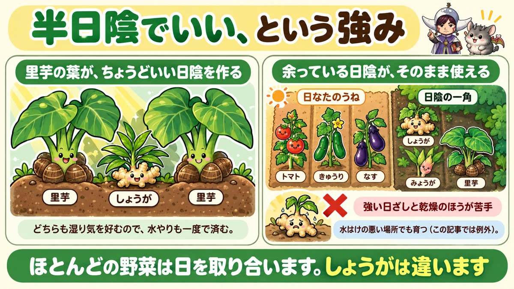
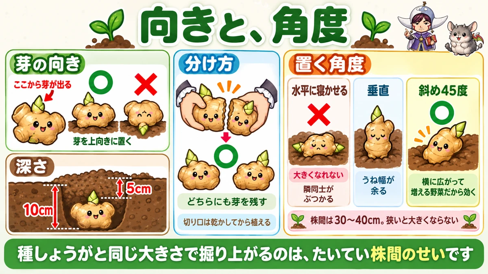
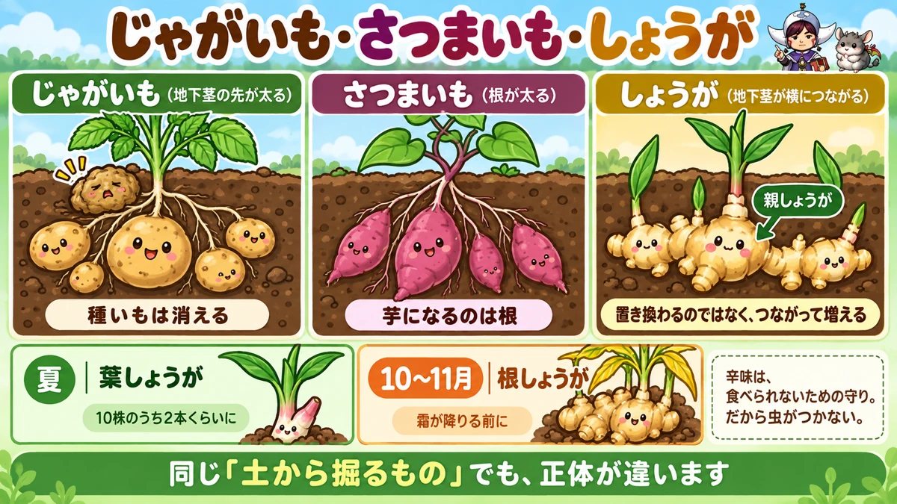

しょうがは、夏に一度穫れます🌱 半日陰でいい、めずらしい野菜
🌱「日当たりの悪い場所が余っているけど、何も植えられない」
🌱「植えたけど、掘ったら種しょうがとほとんど同じ大きさだった」
🌱「秋まで何も穫れないのが、正直つらい」
どうも、8150（えいこう）です🌱 家庭菜園歴8年、理科の教員免許を持っていて、有機・無農薬で野菜を育てています。
前回はしそでした。今日はしょうがです。
しょうがは★家庭菜園でずいぶん得をする野菜だと思っています。
理由は3つあります。
- ★半日陰でいい
- ★虫がつかない
- ★夏に一度、途中で穫れる
先に、この記事でいちばん言いたいことを言っておきますね。
★日当たりの悪い場所こそ、しょうがの席です🌱
まず、しょうがの基本データ
3つだけ押さえてください
- 科：ショウガ科（ほかの野菜と科がかぶりません）
- 植え付け：5月（連休以降）
- 収穫：夏に葉しょうが／10〜11月に根しょうが
※時期は中間地（関東〜関西の平野部）が目安。寒い地域は少し遅らせ、暖かい地域は早めに。
種しょうがは、売っている時期が短いです
★種しょうがが店に並ぶのは、4月中旬から5月中旬ごろです。
★この期間を逃すと手に入りません。見かけたら買っておいてください。
★植えるのは、連休以降
売っているからといって、すぐ植えなくていいです。
★4月後半はまだ朝夕が冷えます。
★5月の連休以降のほうが安心です。私は毎年そうしています。
土づくり
1平米あたりの目安です。
- ★牛ふん堆肥
- ★鶏ふん150cc
- ★油かす100cc
これをよく耕して混ぜてから、うねを作ります。
★半日陰でいい、という強み

ほとんどの野菜は、日を取り合います
家庭菜園をやっていると、必ずぶつかる問題があります。
★いい場所が足りない。
トマトもなすもきゅうりも、みんな日当たりを欲しがります。★北側や、建物の陰は余りがちです。
しょうがは、そこで育ちます
しょうがは★半日陰で育ちます。
というより、★強い日ざしと乾燥のほうが苦手です。
★余っている日陰こそ、しょうがの席なんですね。
里芋と、組み合わせる
これは特におすすめの方法です。
★里芋と里芋の間に、しょうがを植える。
里芋は葉が大きく育ちます。★その葉が、しょうがにちょうどいい日陰を作ってくれます。
★どちらも湿り気を好むので、水やりも一度で済みます。
水はけが悪くても、いけます
もうひとつ。
★しょうがは、水はけの悪い場所でも育ちます。
これまで「水はけのよいうねを」と何度も書いてきましたが、★しょうがは例外です。
★じめじめした一角があるなら、そこが候補になります。
★植え方は、向きと角度

まず、芽の向き
種しょうがをよく見てください。
★表面に、ぽこぽことした突起があります。
★ここから芽が出ます。だから★突起を上に向けて置いてください。
逆さに植えると、芽が回り込むぶん出遅れます。
深さ
- ★穴を10cmほど掘る
- ★上に5cmほど土をかぶせる
★深すぎず、浅すぎず。かぶせた土は軽く押さえておきます。
★株間は、けちらない
ここが失敗しやすいところです。
★株間は30〜40cmとってください。
★狭いと大きくなりません。「種しょうがと同じ大きさで掘り上げた」の原因は、たいていこれです。
★広いぶんには問題ありません。
大きい種しょうがは、折る
大きい塊のまま植える必要はありません。
★芽が2つ以上ついているなら、手で折って分けてください。
割るときの条件はひとつだけです。★どちらの側にも芽が残るように割る。
★切り口は、乾かしてから植えます。
★斜め45度に、置きます
最後に置き方です。これは面白いコツでした。
★うねに対して、斜め45度に置く。
理由はこうです。
- ★うねと水平に寝かせると、隣どうしがぶつかって大きくなれない
- ★垂直だと、うね幅が余る
- ★斜め45度なら、うねの幅をいちばん使える
しょうがは★横に広がって増えていく野菜なので、この置き方が効きます。
もみ殻を、かぶせる
もし手に入るなら、★植えたあとにもみ殻をかぶせてください。
★浅く植えるので、地面の冷えや凍結から守れます。
夏のお世話は、乾かさないこと
土寄せ
★芽が10〜15cmになったら、土寄せをします。
マルチを張っている場合は、★その上から寄せてもかまいません。
追肥
★草丈が30cmになったら、1回目の追肥です。
- ★株元から20cm離す
- ★1か所に鶏ふんを20ccほど
- ★左右2か所に
★株元に直接まかないでください。根はもう外側まで伸びています。
★敷き草が、いちばん効きます
しょうがのお世話は、実質これだけです。
★乾かさない。
刈った草や、抜いた雑草を★うねの上に敷いてください。
★水分が逃げにくくなり、真夏の地温も下がります。
私は毎年、★通路の草を刈ってそのまましょうがのうねに載せています。捨てるものが仕事をしてくれます。
虫は、ほぼ来ません
うれしい話をひとつ。
★しょうがには、ほとんど虫がつきません。病気にもかかりにくいです。
★植えて、土寄せして、敷き草をして、乾いたら水をやる。それだけで秋まで行けます。
★夏に一度、穫れます
葉しょうが
秋まで待たなくていい、というのがこの野菜の楽しいところです。
★夏に、株ごと若いうちに1本抜いてください。
これが★葉しょうがです。根元の白い部分にみそをつけて食べます。
★やわらかくて、香りが立っています。買うと意外に高いものです。
抜きすぎないこと
もちろん★抜いた株は、そこで終わりです。
★何株かに1本くらいにしてください。全部抜くと、秋の収穫がなくなります。
★私は10株のうち2本を夏に抜いています。
根しょうが
★10月から11月が、本番の収穫です。
葉が黄色くなってきたころが目安です。★霜が降りる前に掘り上げてください。
学ぶ：種しょうがは、消えません🔬

じゃがいもの種いもは、なくなります
じゃがいもを掘ったことがある方は、思い出してみてください。
★植えた種いもは、しぼんでボロボロになっています。
★中身を使い切って、新しいいもに渡したわけですね。
しょうがは、残ります
ところが、しょうがは違います。
★掘り上げると、植えた種しょうががそのまま残っています。
しかも★そこに新しいしょうががくっついて、つながった塊になっています。
★これを親しょうがと呼びます。硬いですが、食べられます。
なぜ違うのか
理由は、増え方の違いです。
- ★じゃがいも … 地下の茎の「先」が太って、新しいいもになる
- ★しょうが … 地下の茎そのものが、横につながって伸びていく
つまり★しょうがは「置き換わる」のではなく「つながって増える」んですね。
3つ並べると、分かります
これまで書いてきた3つを並べてみます。
- ★じゃがいも … 地下の茎が太ったもの。種いもは消える
- ★さつまいも … 根が太ったもの
- ★しょうが … 地下の茎が横につながったもの。種しょうがは残る
★同じ「土から掘るもの」でも、正体が全部違います。
辛いのにも、理由があります
最後にもうひとつ。
★しょうがが辛いのは、食べられないための守りです。
だから★虫がつきません。「無農薬でも楽な野菜」の正体は、この辛味なんですね。
★掘り上げたときに、あの香りが立つ理由も同じです。守るために作った成分を、人間がおいしいと思っている☺️
まとめ
ここまで読んでくださって、ありがとうございます！
- ★しょうがはショウガ科。他の野菜と科がかぶらない
- ★種しょうがが売っているのは4月中旬〜5月中旬
- ★植えるのは5月の連休以降が安心
- ★1平米に牛ふん堆肥＋鶏ふん150cc＋油かす100cc
- ★半日陰でよく育つ。強い日ざしと乾燥が苦手
- ★里芋と里芋の間に植えると、葉が日陰を作ってくれる
- ★水はけの悪い場所でも育つ
- ★突起（芽）を上に向けて置く
- ★穴は10cm、土は5cmかぶせる
- ★株間は30〜40cm。狭いと大きくならない
- ★芽が2つ以上なら折って分ける（両方に芽を残す）
- ★うねに対して斜め45度に置くと、幅を使いきれる
- ★芽が10〜15cmで土寄せ
- ★草丈30cmで追肥。株元から20cm離して左右に
- ★刈草を敷いて乾かさない
- ★虫も病気もほとんど来ない
- ★夏に何株か抜けば、葉しょうがが穫れる
- ★根しょうがは10〜11月、霜の前に
- ★種しょうがは消えずに親しょうがとして残る
全部やろうとしなくて大丈夫です。まずは★畑でいちばん日当たりの悪い場所を、しょうがの席にしてみてください🌱
次回は、春菊の話です。★芽が出にくいのには、はっきりした理由があるというお話をします🌿
敷きわら
しょうがは乾燥に弱い野菜です。株元に厚めに敷いておくと、水やりの回数が減ります。
![[商品価格に関しましては、リンクが作成された時点と現時点で情報が変更されている場合がございます。]](https://hbb.afl.rakuten.co.jp/hgb/56bc2fb2.ff40a6e6.56bc2fb3.618f6a70/?me_id=1257026&item_id=10000211&pc=https%3A%2F%2Fthumbnail.image.rakuten.co.jp%2F%400_mall%2Fsharuka%2Fcabinet%2F09042254%2Fimgrc0081094692.jpg%3F_ex%3D240x240&s=240x240&t=picttext "[商品価格に関しましては、リンクが作成された時点と現時点で情報が変更されている場合がございます。]")

もみ殻くん炭
水はけと水もちを同時に良くします。しょうがの畑とは相性がいいです。
![[商品価格に関しましては、リンクが作成された時点と現時点で情報が変更されている場合がございます。]](https://hbb.afl.rakuten.co.jp/hgb/56bc30bc.01c5b89d.56bc30bd.ee310357/?me_id=1231595&item_id=10000412&pc=https%3A%2F%2Fthumbnail.image.rakuten.co.jp%2F%400_mall%2Fplanto-iwa%2Fcabinet%2F2707.jpg%3F_ex%3D240x240&s=240x240&t=picttext "[商品価格に関しましては、リンクが作成された時点と現時点で情報が変更されている場合がございます。]")
米袋
収穫したあとの保存に使えます。寒さに弱いので、凍らせないことが第一です。
![[商品価格に関しましては、リンクが作成された時点と現時点で情報が変更されている場合がございます。]](https://hbb.afl.rakuten.co.jp/hgb/56bc3119.f1f4196c.56bc311a.c9ac6e4e/?me_id=1215024&item_id=10001843&pc=https%3A%2F%2Fthumbnail.image.rakuten.co.jp%2F%400_mall%2Fkminori%2Fcabinet%2Fhozai%2Fimg57520728.jpg%3F_ex%3D240x240&s=240x240&t=picttext "[商品価格に関しましては、リンクが作成された時点と現時点で情報が変更されている場合がございます。]")
あわせて読みたい